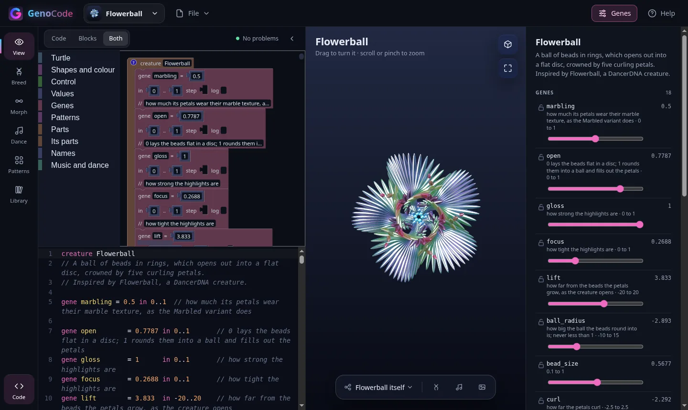
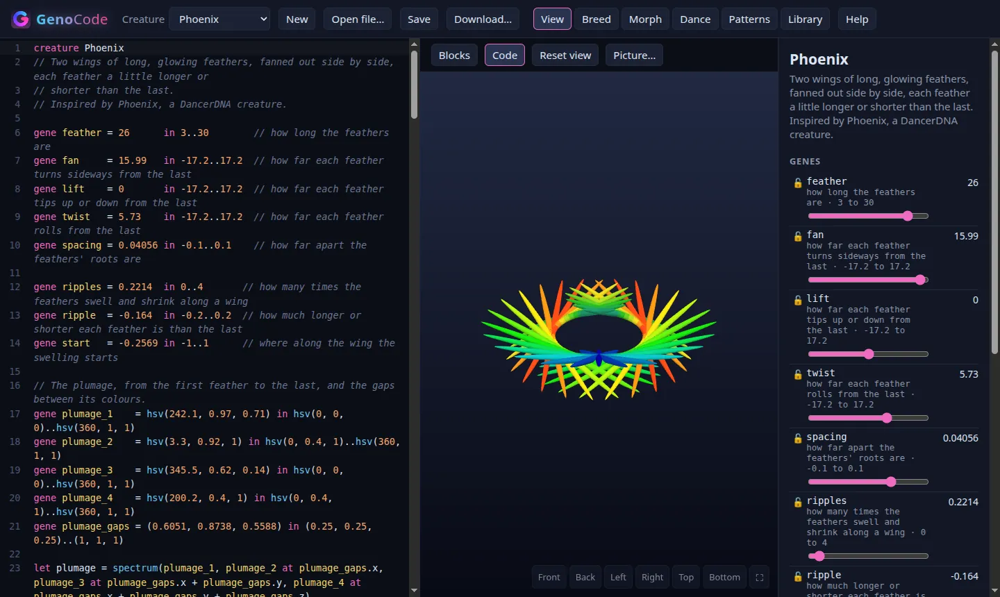
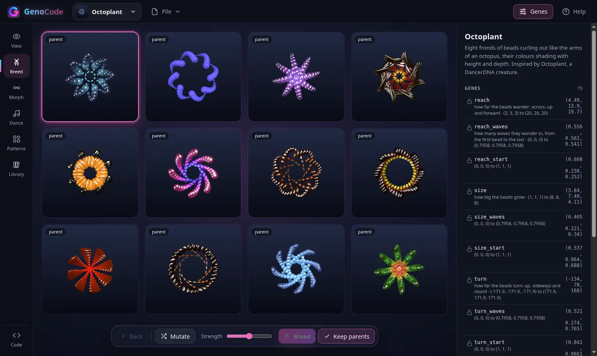
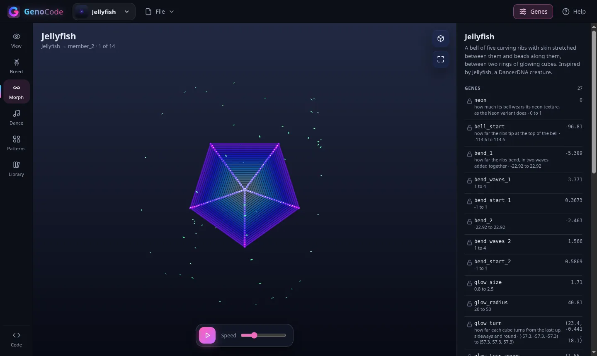
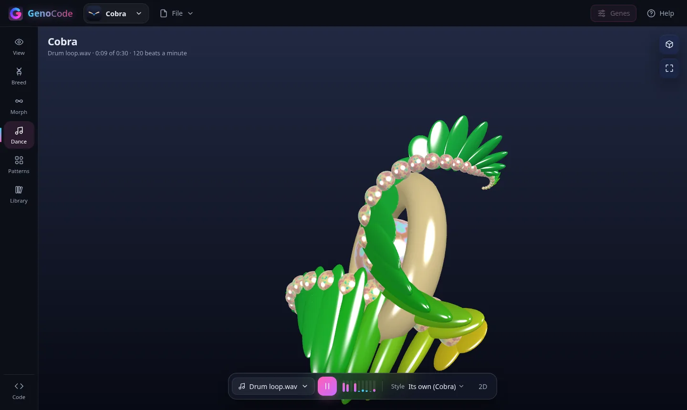
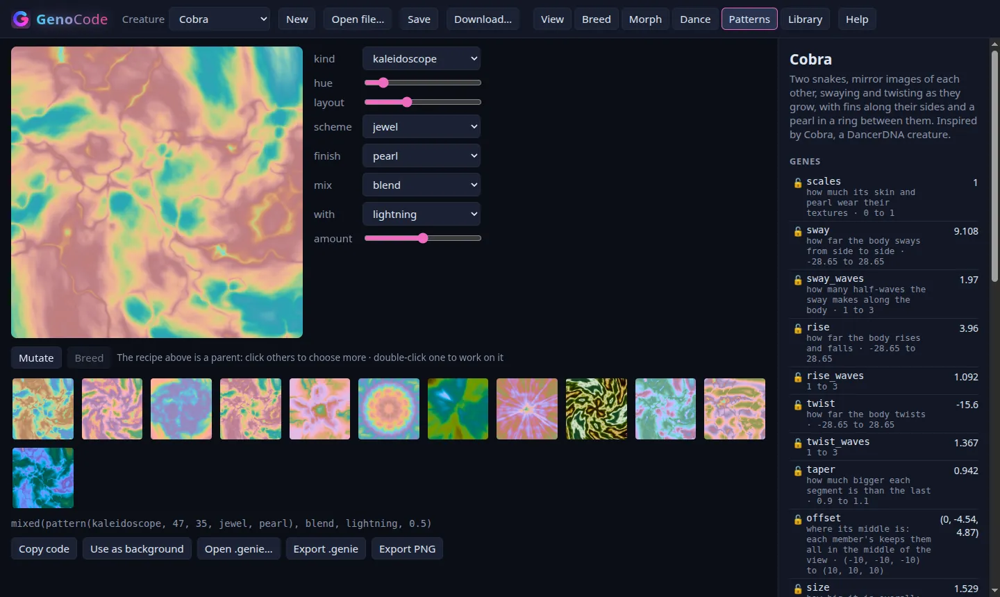
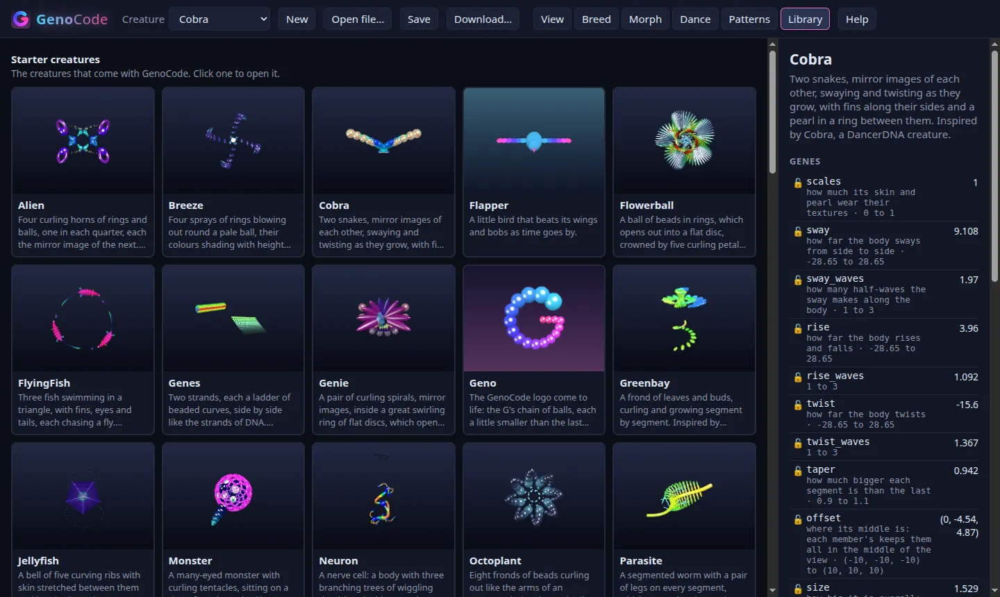

Code or blocks
Prefer not to type? Drag blocks onto a canvas and the code is written for you. Change either one and the other follows, comments and all. Gene sliders and colour pickers sit right on the blocks.
GenoCode is a small language for making creatures, and an app to grow them in. Write a creature as code or build it from blocks, breed it into a family of new ones, and watch them dance to your music.
Start creating Getting started
Free, in your browser, nothing to install. Open source (MIT).

An invisible turtle moves and turns in 3D and lays shapes where it goes: balls, cubes, cones, tubes, rings. Mark a value as a gene and it gets a slider, and it can mutate, be passed on to children and blend from one creature to another.
creature Snowman
// Balls one on another, each smaller than the last.
gene balls = 3 in 2..6 step 1 // how many balls
gene shrink = 0.75 in 0.5..0.95 // how much smaller each ball is
gene snow = hsv(200, 0.1, 1) in hsv(0, 0, 0.6)..hsv(360, 0.5, 1)
pitch -90
shape ball
colour snow
repeat balls {
lay
forward 0.8
grow shrink
}
Prefer not to type? Drag blocks onto a canvas and the code is written for you. Change either one and the other follows, comments and all. Gene sliders and colour pickers sit right on the blocks.

Every program describes a whole family. Mutate a creature into a grid of variations, pick two parents and breed them, lock the genes you like and keep going. A bred creature saves as one self-contained file.

A creature can have named variants. Morph glides smoothly from one to the next and round again, every gene blending on the way.

Play a music file, a web address, your microphone or another browser tab. GenoCode hears the bass, the middle and the highs, finds the beat, and the creature dances in one of 17 styles. Dance styles are GenoCode too, so you can write your own. Then record it as a video to share.

Design textures with schemes and finishes like pearl, metallic and iridescent, breed them like creatures, and put them on a creature or behind it. Or write your own patterns, pixel by pixel, in GenoCode.

Open a starter creature, read how it's made, change a number and see what happens.
Save your own in the browser or download them as .genie files.
Write .genie files in Visual Studio Code with checking, help on hover,
renaming, colour pickers and a live 3D preview.
Check, format, draw, mutate, breed and morph creature files without a browser.
The language, the renderer and the app are MIT licensed. The full language reference is on this site.